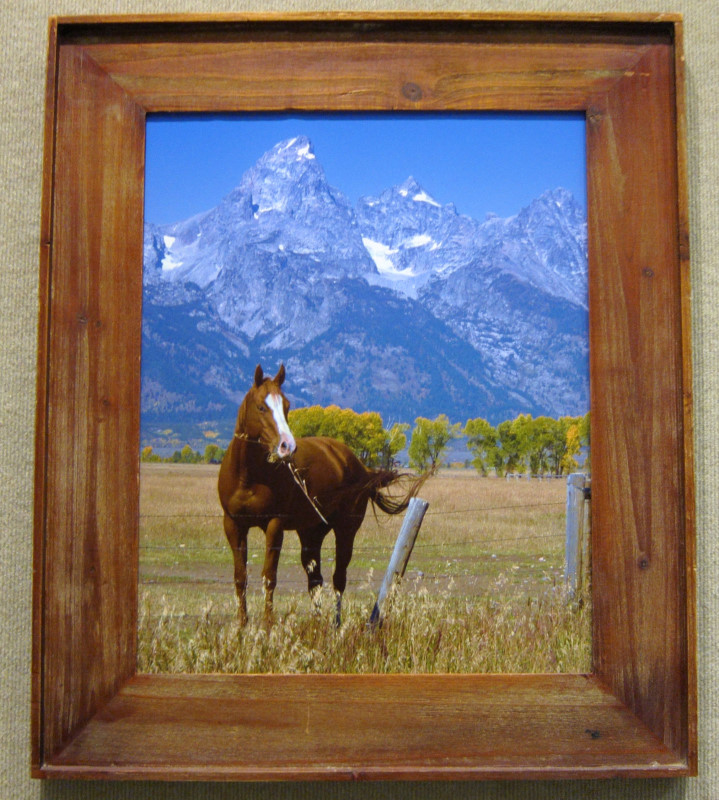
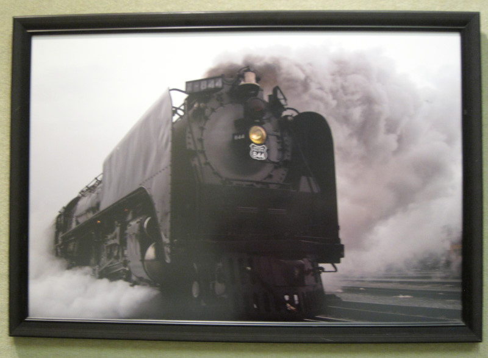
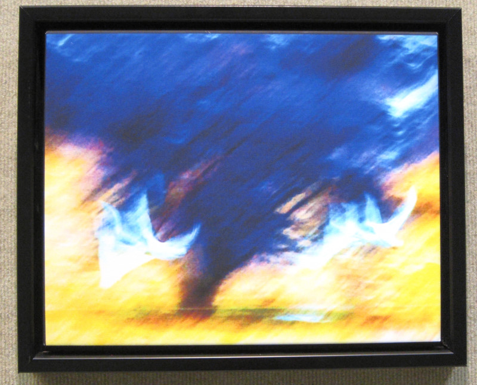
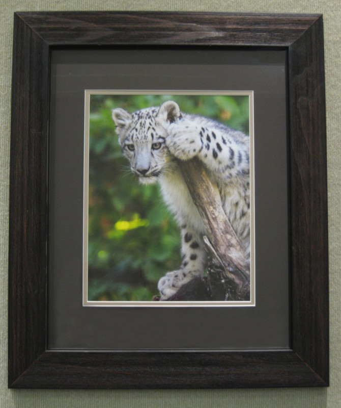
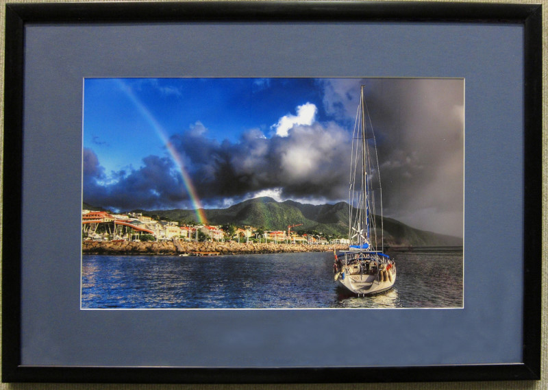
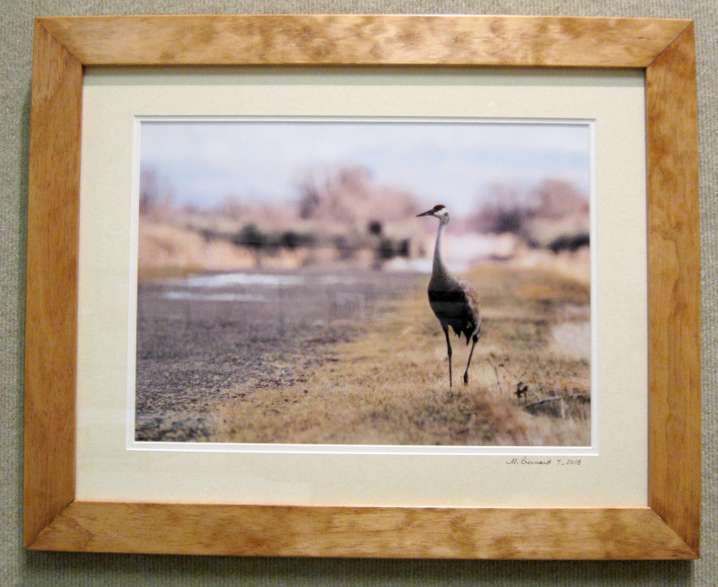
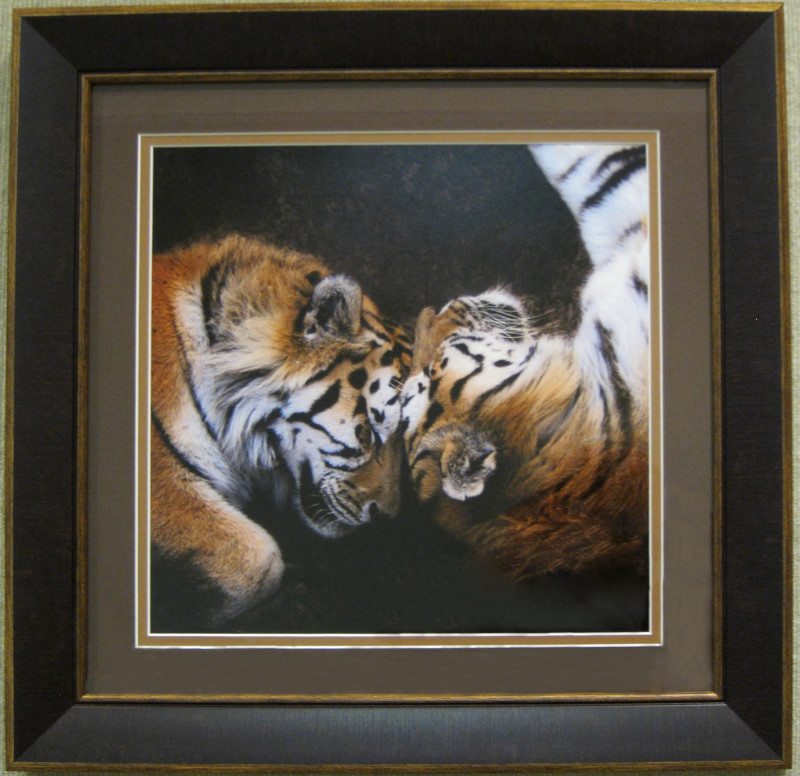
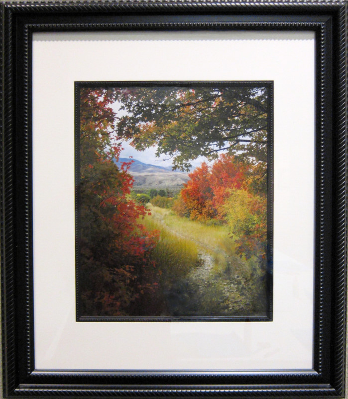

The Art Museum of Eastern Idaho EIPS Exhibit, May 22 - July 2, 2018
Examples of EIPS Photos
-

Teton Filly
© Angela Roach
-

Steam
© Ben Poston
-

Swans in Flight
© Denise Spring
-

Picabo
© Mark Byrd
-

Sailboat and Rainbow
© Michael Fryer
-

Riverside Retreat
© Michael Bernard
-

Kinship
© Shannon Bowen
-

Portneuf Range
© Steve Spring